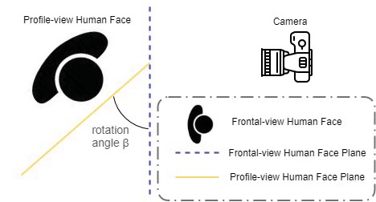
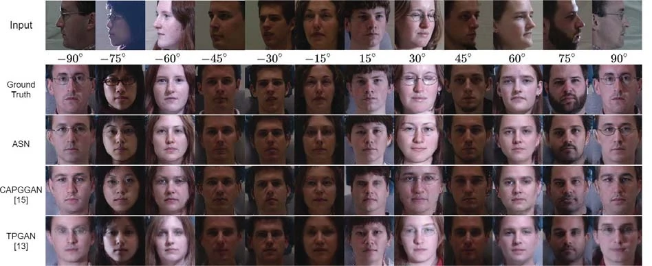

IEEE ICIP · 2020
Attention Selective Network
Attention Selective Network for Face Synthesis and Pose-Invariant Face Recognition
ASN uses separate encoders for image appearance and pose-landmark heatmaps. Attention Selective Blocks fuse these signals, while an adaptive symmetry loss accounts for pose-dependent self-occlusion without forcing perfect symmetry in every case.
Architecture
ASN combines a GAN with separate appearance and topology encoders, Attention Selective Blocks, and an identity feature extractor. It is trained with frontal-view ground truth.

Adaptive symmetry
The symmetry term depends on the input pose angle. It increases the penalty for a lack of symmetry when the observed profile contains less frontal-view information.

Visual results
The original comparison includes synthesised frontal views from multiple profile angles. The evaluation is on the controlled pose dataset described in the paper; it is not a claim of generalisation to all in-the-wild conditions.
The paper also reports higher computational cost than its two compared supervised baselines. The visual examples therefore sit alongside, not in place of, the quantitative and cost analysis.
